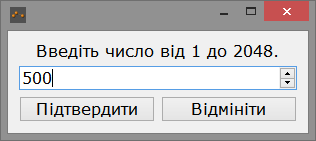

При запуску програми, ви побачите головне вікно, як зображено на рисунку 1.
Рисунок 1 - Головне вікно програми
Зверху ви побачите меню зі вкладками як зображено на рисунках 2, 3 та 4

Рисунок 2 - Вкладка Меню

Рисунок 3 - Вкладка Алгоритм

Рисунок 4 - Вкладка Допомога
На вкладці Меню вам необхідно натиснути на підменю Відкрити файл. Ви побачите діалогове вікно, як зображено на рисунку 5. Вам треба ввести, або перекликнути на двох кнопках число від 1 до 2048. Чим більше воно буде, тім більше ви отримаєте граф.

Рисунок 5 - Діалогове вікно для введення числа
Далі, треба вибрати файл, та підтвердити своє рішення, як зображено на рисунку 6.

Рисунок 6 - Діалогове вікно вибору файлу
Після цього, ви побачите побудований граф, як зображено на рисунку 7. Ви можете перетискати вершини графу, масштабувати, використовуючи ролик на мишці. Також ви можете зберегти інформацію о графі у файл XML формату, або виконати пошук в ширину.

Рисунок 7 - Головне вікно з побудованим графом
Для того, щоб зберегти граф у файл, формату XML необхідно на вкладці Меню, головного вікна натиснути Зберегти у XML. У папці з програмою, ви побачите файл "graph.txt".
Для виконання пошуку в ширину, вам необхідно на вкладці Алгоритм натиснути на підменю Пошук в ширину. Ви побачите діалогове вікно із усіма номерами вершин які є на графі, як на рисунку 8. Далі треба обрати одну з них. та натиснути кнопку Почати пошук. Пошук буде розпочато (рисунок 9). Коли пошук буде завершено, ви побачите діалогове вікно як на рисунку 10.

Рисунок 8 - Діалогове вікно для старту пошуку

Рисунок 9 - Процес пошуку в ширину

Рисунок 10 - Пошук завершено
Для того щоб знову перекрасити вершини у початковий колір, треба на вкладці Алгоритм натиснути на підменю Очистити.
На вкладці Допомога, ви можете знайти інформацію о програмі та її автору, а також інструкцію користувача.